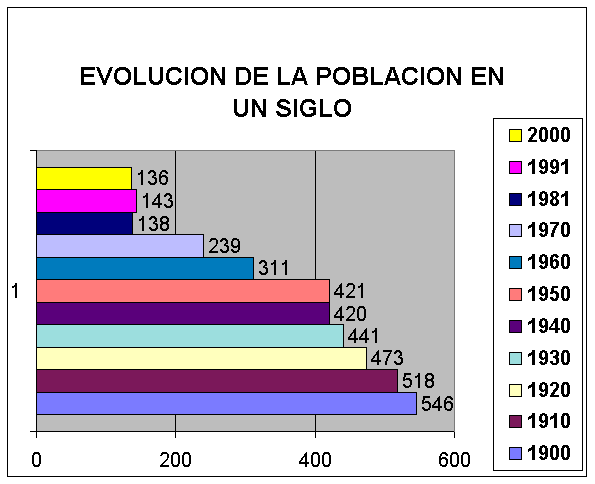
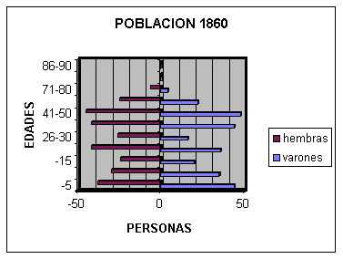

Datos y estadísticas
Censo de población de 1860 y evolución del número de habitantes de Olocau del Rey a lo largo del siglo XX.
Evolución de la población en un siglo

| Año | Habitantes |
|---|---|
| 1900 | 546 |
| 1910 | 518 |
| 1920 | 473 |
| 1930 | 441 |
| 1940 | 420 |
| 1950 | 421 |
| 1960 | 311 |
| 1970 | 239 |
| 1981 | 138 |
| 1991 | 143 |
| 2000 | 136 |
Censo de población de 1860
Censo a día 25 de diciembre de 1860: 549 habitantes.
| Habitantes | Transeúntes | Solteros | Casados | Viudos | Saben leer y no escribir | Saben leer y escribir | No saben leer ni escribir | |
|---|---|---|---|---|---|---|---|---|
| Varones | 260 | 3 | 137 | 107 | 19 | 7 | 65 | 191 |
| Mujeres | 281 | 5 | 157 | 108 | 21 | 4 | 6 | 276 |
